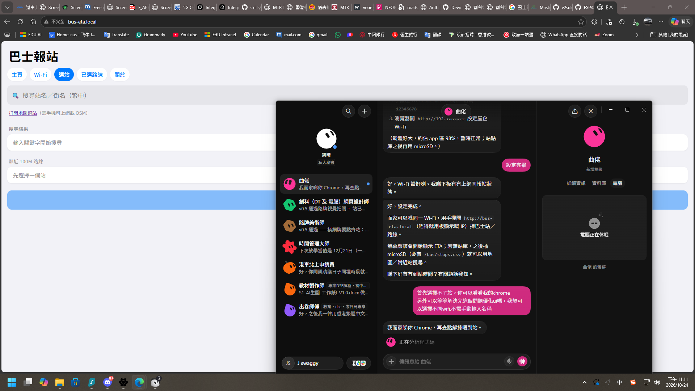

設定頁預覽

手動燒錄摘要
- 板型：ESP32 Dev Module · Flash 4MB
- 工具：esptool 或 Arduino IDE 2.x
- flash_args 位址：
0x1000bootloader ·0x8000partitions ·0xe000boot_app0 ·0x10000app - 亦可一次寫入
merged.bin - 網頁設定 UI 需另傳 LittleFS（zip 內含
littlefs.bin）